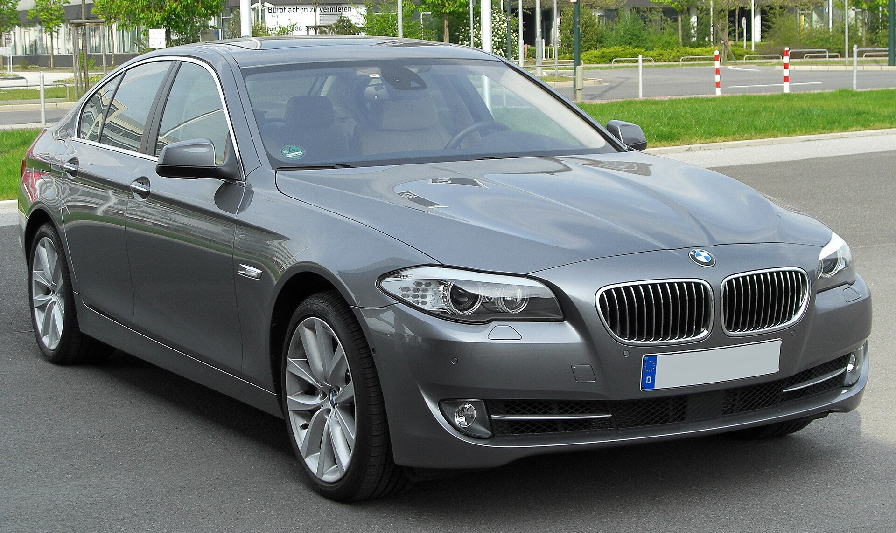

Оснащение зависит от комплектации
Припарковаться
без лишних догадок.
Датчики PDC помогают оценить расстояние до препятствия. Камера заднего вида и Surround View добавляют обзор — если установлены. Эти системы не стоит считать одним неразделимым пакетом.
Камеры и автоматический парковочный ассистент — отдельные опции. Проверяйте изображение, работу датчиков и доступные функции на конкретной машине.